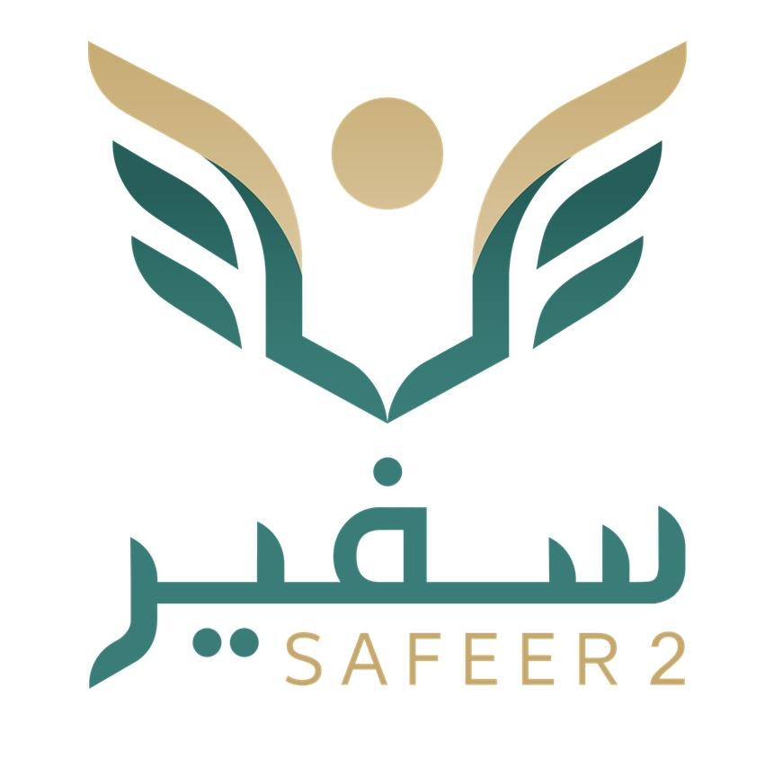
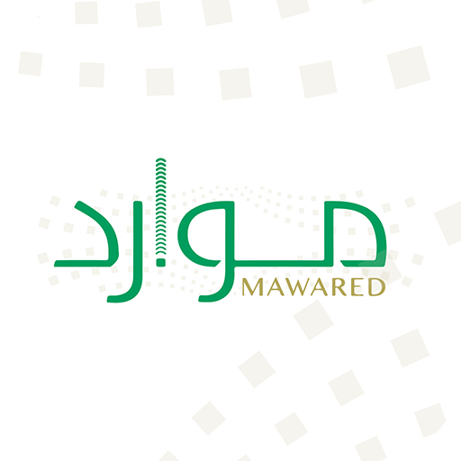
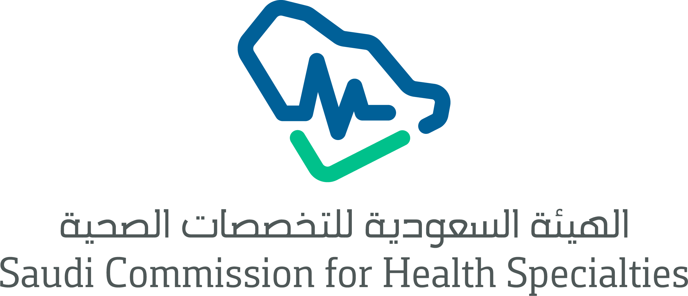

منصة رقمية متكاملة
المنصة الرقمية لإدارة الإيفاد والابتعاث
أتمتة كاملة، بيئة بلا ورق، وقرارات مدعومة بالبيانات لتمكين الكوادر الصحية بتجمع جدة الصحي الثاني.
تسريع الإجراءات
توفير 100% للورق

أتمتة كاملة، بيئة بلا ورق، وقرارات مدعومة بالبيانات لتمكين الكوادر الصحية بتجمع جدة الصحي الثاني.

بناء نظام إلكتروني متطور لمتابعة طلبات الإيفاد والابتعاث، يتجاوز النظام مجرد أرشفة المستندات ليشمل أتمتة كاملة لإجراءات الإدارة والمتابعة (الإدارية والمالية).
يهدف النظام لربط متكامل لإدارة كافة طلبات الإيفاد والابتعاث لضمان سير أتمتة رحلة الموفد أو المبتعث منذ رفع الطلب وحتى إخلاء طرفه، دون الحاجة لتدخل إداري ورقي في العمليات الروتينية. وذلك من خلال لوحة تحكم ذكية تعرض تقدم الموفد/المبتعث، الوقت المستغرق، ونتائج التقييم، مع تزويد الإدارة بتقارير تحليلية لحظية. يمنح النظام صلاحية وصول كاملة لفرق إدارة الإيفاد والابتعاث والإدارات المساهمة في المستشفيات التابعة لتجمع جدة الصحي الثاني.
الغايات الأساسية والتشغيلية وراء إطالق المنصة الرقمية
بناء بيئة رقمية آمنة وموثوقة لإدارة بيانات الموفدين والمبتعثين، مما يضمن استمرارية الأعمال وحفظ الأصول.
الاستخدام الأمثل للموارد وتقليل الإجراءات اليدوية والهدر في الجهد والوقت.
التحول الرقمي الكامل واعتماد مسارات العمل الإلكترونية والاستغناء عن التعاملات الورقية.
تفعيل نظام الإشعارات الفورية والردود الآلية لتسريع إصدار قرارات الإيفاد والابتعاث.
توفير لوحات تحكم تفاعلية للمسؤولين لمتابعة الرحلة الأكاديمية والمهنية لحظياً.
الحد من الأخطاء البشرية الناتجة عن الإدخال اليدوي وضمان تدفق دقيق للمعلومات.
خلق رحلة رقمية سلسة تبدأ من التقديم السريع وتنتهي بالإجراءات النهائية بيسر.
الربط التقني بين إدارات الابتعاث، الموارد البشرية، والإدارة المالية لضمان التوافق مع الأنظمة.
التدرج المخطط لتنفيذ المنصة وربطها التشغيلي
لجميع الموفدين والمبتعثين (Delegates & Scholars Database)
الربط مع الأنظمة الوطنية (System Integration)
توزيع الأدوار وسير العمل (User Roles & Permissions)
والتقارير والبيانات اللحظية (Analytics Dashboard)
التحقق والإطالق (Testing & Experimentation)
تُسحب آلياً عبر الربط مع نظام الموارد البشرية (موارد) وتشمل:
يتم إدخالها من قبل الموظف وتشمل:
تُرفع كملفات رقمية:
يُحدث آلياً بواسطة النظام:
لضمان دقة البيانات، يتكامل النظام مع الجهات التالية:

نظام موارد (Maward)لسحب بيانات الموظف الأساسية وتحديث حالته الوظيفية تلقائياً.

الهيئة السعودية للتخصصات الصحيةللتحقق من الاعتراف بالبرامج التدريبية والتصنيف المهني.

نظام سفير (Safeer)للمبتعثين خارجياً لمتابعة الحالة الدراسية والتقارير الأكاديمية.
لسحب بيانات الموظف وتحديث الحالة.
للتحقق من برامج التدريب والتصنيف.
متابعة المبتعث الخارجي أكاديمياً.
حجر الأساس لضمان أمن المعلومات وحوكمة الإجراءات
التقديم، المتابعة، والتحديث الأكاديمي.
المراجعة الفنية والتوصية.
تدقيق المستندات والاعتماد.
التصويت والاعتماد الجماعي.
إدارة النظام والاعتماد النهائي.
الرقابة المالية والاعتماد.
لوحات تحكم لحظية ورسوم بيانية لخطة الاحتياج
يُعد المخرج المتوقع من مقترح منصة رقمية لإدارة الإيفاد والابتعاث نظاماً متكاملاً يهدف إلى أتمتة دورة حياة الابتعاث بالكامل، بدءاً من تخطيط الاحتياجات السنوية وصولاً إلى متابعة الخريجين بعد انتهاء رحلة الموفد أو المبتعث.